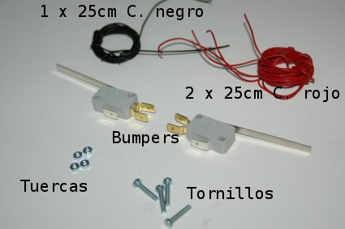
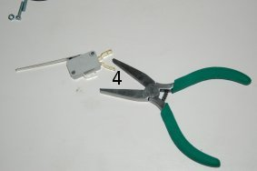
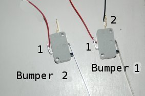
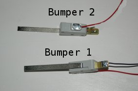
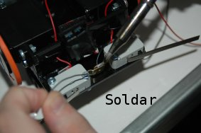
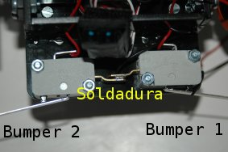
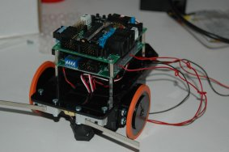

|
Taller de Robótica Básico - Skybot v1.3. - SESION 4. Preparación de los sensores de contacto |
Vamos a colocar los sensores de contacto o bumpers en el robot. Los situaremos en la parte frontal y nos servirán para detectar obstáculos delante del robot. El funcionamiento de un Bumper es muy sencillo, básicamente es un interruptor, de tal manera que al apretar la palanca se cierra un circuito. Nosotros utilizaremos esto para introducir por uno de los pines del micro un "1" o un "0" según tengamos o no apretado el bumper.
Materiales
|
 |
Herramientas
|
 |

Como se puede apreciar en la figura, cada bumper tiene tres conectores. Si apretamos el pulsador lo que estamos haciendo es cortocircuitar el conector 1 (abajo) con el conector 4 (lateral inferior). Si no apretamos el pulsador el conector 1 estará unido con el 2 (lateral superior).
Nosotros vamos a utilizar un circuito de Pull-UP que lleva
incorporada la SKY293, por lo que no es necesario utilizar los tres
conectores, nos bastará con dos. Por lo tanto vamos a proceder
a eliminar el conector 4 (lateral inferior) para que no nos moleste
al montar los bumpers en la estructura. Haremos esto en los dos bumpers.
Luego, soldaremos en el bumper 1 un cable rojo en el conector 1 y uno negro en el conector 2. En el bumper 2 sólo se soldará uno rojo en el conector 1.
El proceso se muestra en las siguientes figuras:
| Paso 1) Quitamos el conector 4 | Paso 2) Bumper con conector 1 y 2 |
 |
 |
| Paso 3) Soldamos los cables en los conectores. El bumper 1 lleva un cable rojo y otro negro. El bumper 2 solo uno rojo. |
Paso 4) Detalle soldaduras |
 |
 |
| Paso 5) Bumper 1 Derecha | Paso 6) Bumper 2 Izquierda |
 |
 |
| Paso 7) Unimos el conector 2 de ambos bumpers. Para ello soldamos los conectores. |
Paso 8) Detalle soldadura |
 |
 |
| Paso 9) Conexión de los bumpers. | |
 |
|
| Paso 10) Pasar cables por los pasamuros. | Paso 11) Montamos la SKYPIC |
 |
 |
Paso 12) Conectar los PUERTOS A de cada tarjeta mediante el segundo cable de BUS. |
|
En la siguiente tabla vemos la correspondencia entre las clemas de la SKY293 y el Puerto A de la SKYPIC. Nosotros vamos a leer el estado de los bumpers por el puerto A del PIC. En ese puerto hay 6 entradas que se pueden configurar como entradas analógicas o como IOs digitales. Los bumpers son un sensor de entrada digital.
| SKY293 Puerto A | SKYPIC Puerto A | Descripción |
| AN0 | PA0 | --- |
| AN1 | PA1 | Cable rojo bumper 1 Derecho |
| AN2 | PA2 | Cable rojo bumper 2 Izquierdo |
| AN3 | PA3 | --- |
| TO | PA4 | --- |
| AN4 | PA5 | --- |
| Clema alimentacion | ||
| GND | Cable negro bumpers | |
| VCC | NC |
| Estado | Significado |
| Apretado | bit de entrada a 1 |
| Libre | bit de entrada a 0 |
|
Ejemplos de utilización de los Bumpers |
|
Al pulsar el bumper derecho se apaga el LED |
|||
|
El robot se mueve hasta que detecta un obstáculo y lo persigue |